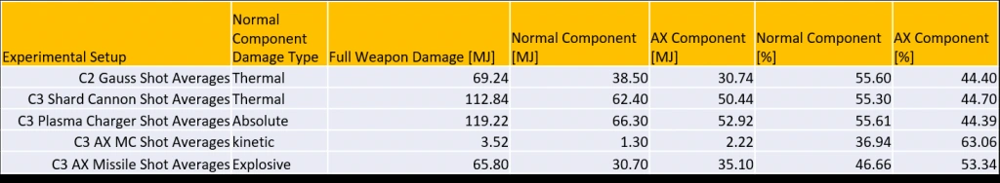
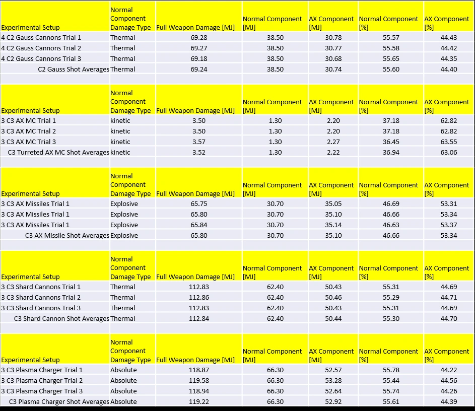

There has been recent success in using rigorous mathematical techniques to accurately estimate the damage partitioning of human weapons, such as Plasma Accelerators and Railguns [1]. Information from the weapon damage partitioning study and similar mathematical techniques were leveraged to get accurate estimates of the Thargoid Interceptor shield characteristics, such as initial strength and resistances [2]. We now turn our attention to estimating the partitioning of damage between Anti-xeno (AX) and conventional damage in Guardian weapons and AX human weapons. Accurate representation of damage components in AX weapons is crucial in understanding additional Thargoid Interceptor and Scout characteristics such as hull strength and Armor Rating (AR).
The table below summarizes the estimation results of this analysis. It should be noted that the numbers below assume the damage values quoted in the outfitting screen are accurate. There is some reason to believe that the damage values provided by the Pilot’s Federation are probably off by around 10% [3]. The values listed for the C3 AX Multi-cannon corresponds to the turreted version of the weapon.

Based on the results above, the following additional observations can be made:
It should be noted that all the weapons above have very different values for Armor Piercing (AP), which is why a weapon like the C3 AX Missile Rack appears to have fairly high damage but is far less effective than Guardian weapons due to its low AP of 60 (as opposed to the Guardian Gauss Cannon’s AP of 140).
Now that we have a proper characterization of Anti-Xeno weapons, we will turn our attention to estimating Thargoid Interceptor and Thargoid Scout hull strengths and Armor Ratings in a future study.
Here we employ the basic damage equation that was originally formulated in the Thargoid shield analysis [2],

where δ is the full weapon damage figure, N is the total number of weapon shots fired, ω_a is the AX component of the full damage, ω_n is the “normal” or conventional component of the full damage, ρ_a is the resistance of the Thargoid’s shield to AX damage, ρ_n is the resistance of the Thargoid’s shield to the weapon’s conventional damage (which can be thermal, kinetic, explosive, or absolute), S is the Cyclops’s shield strength, and ∆ is the fraction of the shield strength at a given moment after the Interceptor has activated its shield. In this analysis we will be making the assumption that Thargoids have no resistance (or enhancement) to AX damage, so we will set to ρ_a to zero.
We know that the two fractional damage components must add up to unity:

Additionally, the weapon damage value that is listed in the outfitting screen is just the product of the full damage and its corresponding scaling factor:

Plugin in the two equations above into the basic damage equation, we can solve for the full weapon damage δ:

Once we have the full weapon damage, we can estimate the fractional components of each weapon. The Cyclops shield strength and its resistances were measured in a previous analysis [2]. The parameter ∆ and the number of shots fired are values that are measured experimentally.
The data acquisition and experimental methodology used in this analysis is the same one employed in the shield strength analysis [2]. For each AX weapon three experimental trials were conducted and the results were averaged together. It should be noted that the result for Shard Cannons corresponds to the damage from all 12 pellets added together. Additionally, the damage values for the Plasma Charger assume the weapon has been fully charged.

The results are internally consistent from trial to trial, indicating data acquisition was precise. There aren’t any additional noteworthy observations to be made, except that Guardian weapons all seem to share the same partition of damage between AX and conventional.
We have carried out an analysis of the damage partitions in human AX weapons and Guardian weapons. The foundation of this analysis was a rigorous mathematical treatment of the problem. Careful experiments were conducted to extract the parameters needed for our damage model equations. As noted in the executive summary the results presented here depend on the accuracy of the information provided in the outfitting screen by the Pilot’s Federation.
Now that we have a proper characterization of Anti-Xeno weapons, we will turn our attention to estimating Thargoid Interceptor and Thargoid Scout hull strengths and Armor Ratings in a future study.
This study was funded in part by the Canonn Interstellar Research Group and the Xeno Investigation division of the Anti-Xeno Initiative. We would like to thank CMDR 100.RUB for providing guidance, words of wisdom, and becoming a strong advocate for transparency in weapon documentation for the benefit of the galactic community.